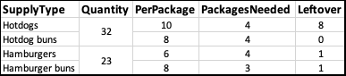

# load openxlsx
library(openxlsx)
# get the sheet names
bbq <- loadWorkbook(filePath)
names(bbq)
# load the sheets and preview them
attendance <- readWorkbook(bbq, "Attendance")
head(attendance)
supplies <- readWorkbook(bbq, sheet = "Supplies")
head(supplies)Making Pretty Excel Files in R
R
R: openxlsx
Excel
Using the openxlsx package in R and RStudio to make formatted Excel files
Intro
It’s a tale as old as time. Your boss gave you a bunch of Excel files and you painstakingly made a bot that will import and display them in a Shiny dashboard. Proud of your work, you take it to your boss and they say “I don’t know what a ‘Shiny’ is, can’t you just give me one of those Excels back?” openxlsx makes this easy.
Today we’re going to recreate an existing workbook with openxlsx. To get started, I made a small .xlsx file for us to work with that can be downloaded here. It’s an attendance list and some notes on supplies you’ll need for a company barbecue. Feel free to get familiar with it then come back here when you’re ready.

attendance sheet
supplies sheetReading an Existing Workbook
As usual, the first thing to do is load our library with library(openxlsx). We can try and load the workbook, the Excel file, with read.xlsx, but for now we’re going to use loadWorkbook. This loads a workbook object and exposes some workbook properties to us rather than just the raw data like with read.xlsx.
[1] “Attendance” “Supplies”
| Name | RSVPed | Status | FoodPreference | |
|---|---|---|---|---|
| 1 | Masud Durga | TRUE | No | NA |
| 2 | Stanislav Zillah | TRUE | Yes | Hotdog |
| 3 | Joaquina Aristide | FALSE | NA | NA |
| 4 | Iuppiter Dieu | TRUE | Yes | Hotdog |
| 5 | Hari Evgenios | TRUE | Yes | Hamburger |
| 6 | Shaina Gwenaelle | TRUE | Yes | Hotdog |
| SupplyType | Quantity | PerPackage | PackagesNeeded | Leftover | |
|---|---|---|---|---|---|
| 1 | Hotdogs | 34 | 10 | 4 | 6 |
| 2 | Hotdog buns | NA | 8 | 5 | 6 |
| 3 | Hamburgers | 36 | 6 | 6 | 0 |
| 4 | Hamburger buns | NA | 8 | 5 | 4 |
Because we loaded the data as a workbook object, we can use getStyles to load the styles and preview them. Unfortunately, the styles can’t pull conditional formatting and don’t keep track of which cells use which styles. By cross referencing the list of styles and bbq.xlsx, we can identify some styles to use and them assign them each to a variable.
# getStyles and set them appropriately
styles <- getStyles(bbq)
styles
# doesn't work for colors because those are conditional formatting
headerStyle <- styles[[1]]
numberStyle <- styles[[7]]I’ve chosen to only show the first two items from the styles list here.
[[1]]
A custom cell style.
Cell formatting: GENERAL
Font name: Calibri
Font size: 14
Font colour: 1
Font decoration: BOLD
[[2]]
A custom cell style.
Cell formatting: GENERAL
Cell horz. align: centerCreating a Workbook
First thing we have to do is create a workbook object that we’ll call wb. We can quickly preview it by just typing wb into our chunk or the console.
# create workbook and check contents
wb <- createWorkbook()
wbA Workbook object.
Worksheets:
No worksheets attachedWe’re going to make the Supplies sheet first as it’s a little bit easier. We first add a new worksheet named Supplies to the workbook, then we can write the relevant data to that sheet along with styling our column headers using headerStyle from earlier.
# create the supplies sheet and check for it
addWorksheet(wb = wb, sheetName = "Supplies")
# write supplies to the worksheet using headerStyle
writeData(wb = wb, sheet = "Supplies", x = supplies, headerStyle = headerStyle)Adding Styles
All of the numbers in the Supplies sheet are centered both horizontally and vertically. We can achieve this by adding the numberStyle from before to those cells. rows and cols both start at 2 because row one is the header row and column one is the supply type. rows goes to 5 because there are 4 rows of numbers (remember the header row) and cols goes to 5 because there are 4 columns of numbers. gridExpand = TRUE makes sure that all cell reference combinations possible with rows and cols are used, rather than doing an entire row or column.
# add numberStyle
addStyle(wb = wb, sheet = "Supplies", style = numberStyle, rows = 2:5,
cols = 2:5, gridExpand = TRUE)If we go back to our data in R, the Quantity for Hotdog buns and Hamburger buns is empty. A bit further back, we see that that’s because those cells were merged with the Quantity of Hotdogs and Hamburgers respectively. We can replicate this using mergeCells. Unlike addStyle, we don’t need to use gridExpand to merge all the cells as it is implied. cols will be 2 for both and we want rows 2 and 3 for Hotdogs and rows 4 and 5 for Hamburgers.
# merge the hamburger and hotdog quantity cells
mergeCells(wb = wb, sheet = "Supplies", cols = 2, rows = 2:3)
mergeCells(wb = wb, sheet = "Supplies", cols = 2, rows = 4:5)Our last step on this worksheet is to set the column widths to auto. We again need to specify cols and can just do 1:5 so that all columns are affected.
# set column widths to auto
setColWidths(wb = wb, sheet = "Supplies", cols = 1:5, widths = "auto")Ou Supplies sheet is now complete, but we’re not going to write it just yet because we still need to do the Attendance sheet.
Like before, we first add the Attendance worksheet and write the data to it.
# create the attendance sheet and check for it
addWorksheet(wb = wb, sheetName = "Attendance")
# write attendance to the worksheet using the same headerStyle from before
writeData(wb = wb, sheet = "Attendance", x = attendance,
headerStyle = headerStyle)Conditional Formatting
The RSVPed and Status columns each have some conditional formatting. We can reuse the color formatting from the RSVPed column on the Status column, so we’re going to separate the color style from the alignment style. It was easy to see how many rows we have in the Supplies sheet but not here so we’re going to create a new variable that has the rowNumbers. Again, we start on row 2 because of the header row and will end at our last data row plus 1.
# create color styles for rsvp and status
goodStyle <- createStyle(fontColour = "#006100", bgFill = "#C6EFCE")
badStyle <- createStyle(fontColour = "#9C0006", bgFill = "#FFC7CE")
# create center style for rsvp column
centerStyle <- createStyle(halign = "center")
# create a variable of row numbers
rowNumbers <- seq(2, nrow(attendance) + 1, by = 1)Our first step is to center the values in the RSVPed column with an addStyle. Next, while we could manually color each cell using a for loop, it’s more efficient to use conditionalFormatting. This also has the added bonus of showing in Excel and responding to any changes. The rule argument may be a little strange, and that’s because it must match how the same formatting rule would be written in Excel. In this case, we use our top-leftmost cell as the reference cell in the rule, B2, then we check if it is TRUE or FALSE. When the rule is applied down the cells in column B, the row number will change to match the current row.
# center the column values
addStyle(wb = wb, sheet = "Attendance",
style = centerStyle, cols = 2, rows = rowNumbers)
# IF `RSVPed` is TRUE, set it to green. IF FALSE, set it to red
conditionalFormatting(wb = wb, sheet = "Attendance", cols = 2,
rows = rowNumbers, rule = "B2==TRUE", style = goodStyle)
conditionalFormatting(wb = wb, sheet = "Attendance", cols = 2,
rows = rowNumbers, rule = "B2==FALSE", style = badStyle)The Status column is very similar to the RSVPed column, but we add a style for Tentative responses and then need a third conditionalFormatting. The newest part here is in the rule argument. We need to put quotes around Yes so that Excel knows that it is a string and need to use \" so that R knows that the quote is part of the string. Once our formatting has been applied, we set the column widths as we did before.
# add style for status and tentative
maybeStyle <- createStyle(fontColour = "#9C6500", bgFill = "#FFEB9C")
conditionalFormatting(wb = wb, sheet = "Attendance", cols = 3,
rows = rowNumbers, rule = "C2==\"Yes\"",
style = goodStyle)
conditionalFormatting(wb = wb, sheet = "Attendance", cols = 3,
rows = rowNumbers, rule = "C2==\"No\"",
style = badStyle)
conditionalFormatting(wb = wb, sheet = "Attendance", cols = 3,
rows = rowNumbers, rule = "C2==\"Tentative\"",
style = maybeStyle)
# set column widths to auto
setColWidths(wb = wb, sheet = "Attendance", cols = 1:4, widths = "auto")Writing the Workbook
The last thing we need to do is reorder the worksheets so that Attendance is first because when we created the workbook in R, we created the Supplies worksheet first. Unfortunately, worksheetOrder only supports integer vectors. We can check our worksheet numbers by calling the object again through either the chunk or console. Then we set the worksheet order and save the workbook to an .xlsx file.
# check the workbook sheet order
wbA Workbook object.
Worksheets:
Sheet 1: "Supplies"
Custom column widths (column: width)
1: auto, 2: auto, 3: auto, 4: auto, 5: auto
Sheet 2: "Attendance"
Custom column widths (column: width)
1: auto, 2: auto, 3: auto, 4: auto
Worksheet write order: 1, 2
Active Sheet 1: "Supplies"
Position: 1# change the order
worksheetOrder(wb) <- c(2, 1)
# save the workbook
saveWorkbook(wb, outputPath, overwrite = TRUE)If we open the new file, we can see that they are nearly identical. The biggest difference between the two is that the original used formulas to calculate the values in Supplies.
If you did want to take it a step further and use those instead, the writeFormula function is your friend. In any case, I highly encourage everyone to at least skim through the openxlsx documentation here because it has so much to offer to help streamline Excel file generation.
All the code for this article is available here. If you want to see more from me, check out my GitHub or guslipkin.github.io. If you want to hear from me, I’m also on Twitter @guslipkin.